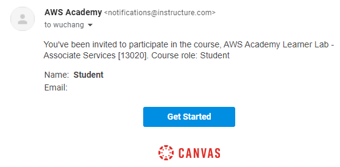
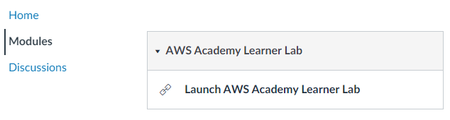
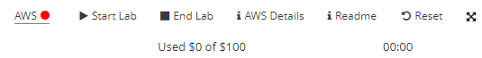

We will be using AWS in this part of the course. Unfortunately, AWS does not allow students to set up a fully functional AWS account unless they are willing to supply a credit card. Instead, we will use AWS via AWS Academy's Canvas site. You will receive a course invitation from AWS Academy to participate in a class.

Follow its instructions to create an account on Canvas, then login to the site at https://awsacademy.instructure.com/login/canvas. From your Dashboard, choose the course listed and then click on "Modules".


Click on "Modules", then launch the lab. This will bring up the console that can be used to access your course's AWS account.
The course comes with a fixed budget for computing resources. Vocareum allows you to control your AWS account in order to limit its consumption. The main navigation bar is shown below:

- Start Lab: Clicking on this button will turn on your AWS account and its services.
- End Lab: Clicking on this button turns the AWS account off
- AWS: After the lab has been started, clicking on this button will launch the AWS console using your AWS account. Note that the color of the dot denotes whether the the account has been turned on (e.g. red indicates off, yellow indicates transitioning, and green indicates on)
- AWS Details: Clicking on this button gives you access to your AWS account ID, your AWS secret access key information and ssh key information for your labs similar to what is shown below.

- Reset: This deletes your AWS workarea and allows you to bring up a fresh AWS setup.
Click on "Start Lab", wait for the AWS account to be enabled and for the dot next to AWS turn green. Then click on the AWS button to bring up the AWS console.

Notify the instructor immediately if you do not get this screen

When your lab is finished and you have taken the required screenshots, go back to the Vocareum console and click on "End Lab"
Option #1: Cloud Shell
AWS Cloud Shell provides a Linux environment that has the AWS CLI and SDK pre-installed. To launch it, find the icon located at the top of the web console after logging in (outlined in red).

Upon launching Cloud Shell, you should be dropped into an interactive container that has the AWS CLI. Note that the CLI has already been configured with your AWS account credentials so there is no need to manually perform the configuration.

Option #2: Python
One can also install the AWS CLI on any Linux machine via a Python package. To do so on a linuxlab machine, perform the following to install the AWS CLI in a virtual environment using Python's pip.
virtualenv -p python3 env source env/bin/activate pip install awscli
Note that if using your own local Linux machine running Ubuntu, you will need to ensure the proper packages are installed below before performing the commands above.
sudo apt update -y sudo apt install python3 python3-pip virtualenv
Once installed, you will need to configure the CLI with the credentials of the AWS account. Go back to the AWS Academy Lab interface, click on AWS Details, and show the AWS CLI information. Then, type the command below and fill in the credentials based on that information.
aws configure
Note that the command does not support setting the short-term aws_session_token information. To do so, you will need to edit the file that the command creates at ~/.aws/credentials .